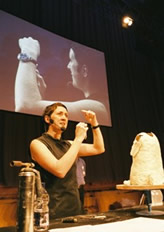
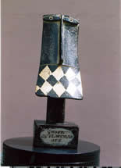
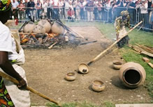

The
International
Ceramics Festival in Aberystwyth (Wales, UK) celebrated
its tenth anniversary in 2005, the biennial nature of the event
meaning that it has been in existence for over 18 years. The
festival is a joint initiative between Aberystwyth Arts Centre
(where it takes place) and North and South Wales Potters, and
each festival welcomes over 1000 ceramicists and potters from
all over the world to partake in a heady mix of demonstrations,
talks, lectures, spectacular firings given by renowned and influential
potters and ceramicists from all over the world.
The festival instigated a Lifetime Achievement Award in 1999
as a means of recognising ceramic artists or potters who have
made a major contribution to the world of ceramics. Past winners
to date are Ray Finch (1999), Mick Casson (2001) Janet Mansfield
and Warren McKenzie (2003) and David Leach and Janet & Frank
Hamer (2005).
The first winner of the award was Ray Finch in 1999.
Ray Finch attended the Central School of Art, London, under
the instruction of Dora Billington in the mid 1930s and in 1936
was offered a position at Winchcombe Pottery. In 1939 he was
left in charge, whilst Michael Cardew set up a new pottery at
Wenford Bridge, Cornwall. During The Second World War Finch
served in the National Fire Service. After the war in 1946 he
resumed his post at Winchcombe and eventually purchased the
business from Michael Cardew who had moved to Africa. During
the 1950s Finch diverted the pottery production at Winchcombe
away from slip decorated earthenware to stoneware. In 1979 he
handed over the management of Winchcombe to his son Michael.
Ray was presented with his award at the 1999 festival by fellow
potter Mick Casson – who coincidentally was the second
recipient of the award in 2001.
Mick Casson, who sadly died in December 2003, was the first
to be honored with an OBE for "Services to his Craft".
He made his first pots in 1945 and set up his first workshop
in Russell Square in 1952 making tin glazed figures and pots.
His first solo exhibition was held at Heals in London in 1959
and the same year he moved his workshop to Prestwood in Buckinghamshire.
Disaster struck in 1963 when the pottery was destroyed by fire
but together he and his wife Sheila built a gas kiln and re-established
their pottery making stoneware and porcelain production ware.
The same year he founded the studio pottery course at Harrow
School of Art with Victor Magrie - the first vocational course
of its kind. From 1971-73 he was Head of the Ceramics Department
at Harrow School of Art. From 1975 until the mid 1980s he was
a member of the first board of Dartington Training workshops.
He also traveled regularly to the United States to teach, lecture
and exhibit his work. Many will remember Mick for his film "Michael
Casson Studio Potter" which won the Cirus Films Gold Medal
in 1967, his book "Pottery in Britain Today" 1967,
and the BBC TV series "The Craft of the Potter" which
was followed by a book of the same name in 1975. In memory of
his contribution to the world of ceramics, the Ceramics Festival
instigated a special Mick Casson Memorial Lecture to take place
at each festival. The inaugural lecture was given by Mick’s
daughter, Lucy Casson at the 2005 festival.
The 2003
Festival saw two winners of the Lifetime Achievement
Award – Janet Mansfield from Australia, and Warren Mckenzie
from the USA. Janet is a World recognised expert on salt-glaze
ceramics and is editor of the influential Australian publication
'Ceramics Art and
Perception'. Warren McKenzie and his wife Alix spent
two years at the potter's cottage with Bernard Leach where he
learned much of value from conversations with him. Although
he and his wife had studied at an American art school they had
found the training in ceramics inadequate and came to the UK
to develop their competence in throwing and producing standard
ware, and to experiment with techniques and ideas. Returning
to America in the early 1950s Warren was appointed lecturer
at the University of Minnesota but also continued with his own
pottery and still to this day uses an adaptation of the wheel
originally built for the St. Ives pottery. He is one of the
foremost potters working within the Anglo Oriental tradition.
.
The winners of the 2005
Lifetime Achievement Award were renowned potter David
Leach (who sadly died earlier in the year and so was awarded
the honor posthumously), and Janet and Frank Hamer, co-authors
of The Potter’s Dictionary of Materials and Techniques.
David Leach, the eldest son of the great potter Bernard Leach,
was a potter of international reputation whose work is eagerly
sought by collectors all over the world. He worked with his
father at the Leach Pottery in St. Ives as a student, manager
and partner until the mid 1950s when he set up his own studio
at Lowerdown Pottery near Bovey Tracey in Devon. Aside from
his own work, David worked extensively in ceramics education
and for crafts organisations and throughout his career maintained
his enthusiasm for ceramics, constantly striving for technical
and artistic improvement. He died in February 2005 after a long
and productive life.
| Janet
and Frank Hamer are respected ceramicists based in rural
Monmouthshire, and are founding members of South Wales Potters,
who together with North Wales Potters and Aberystwyth Arts
Centre organise the International Ceramics Festival. Together
they are the authors of The Potters Dictionary of Materials
and Techniques which has been on sale for nearly 30 years
and is now in its fifth much expanded edition. |
| The
next, and 11th
International Ceramics Festival will take place
from 6-8 July 2007 in Aberystwyth. Bookings
for the festival will open in the autumn of 2006 and early
booking is strongly recommended as the festival is always
a sell-out. The winners of the Lifetime Achievement Award
for 2007 will be announced at the opening session of the
festival. |